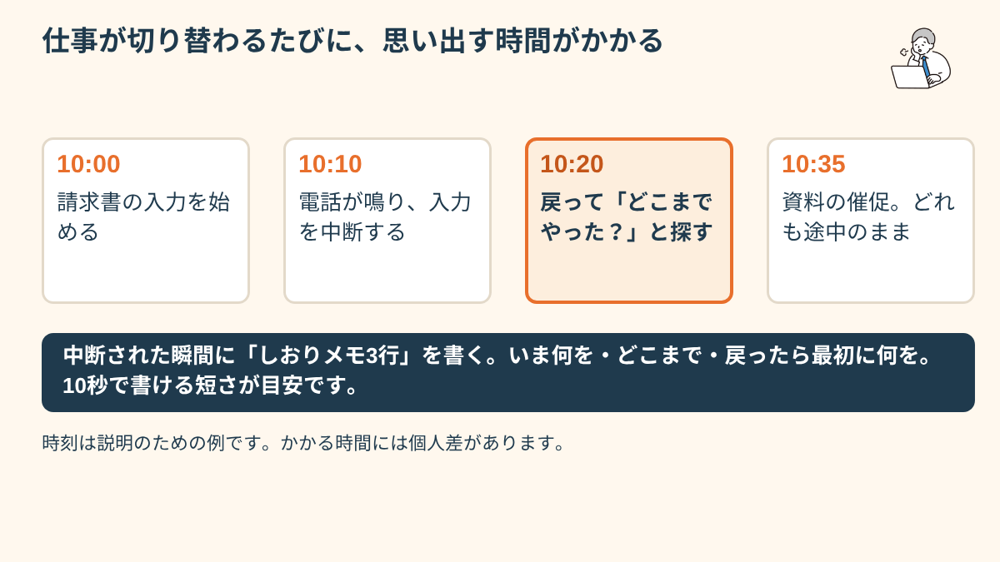
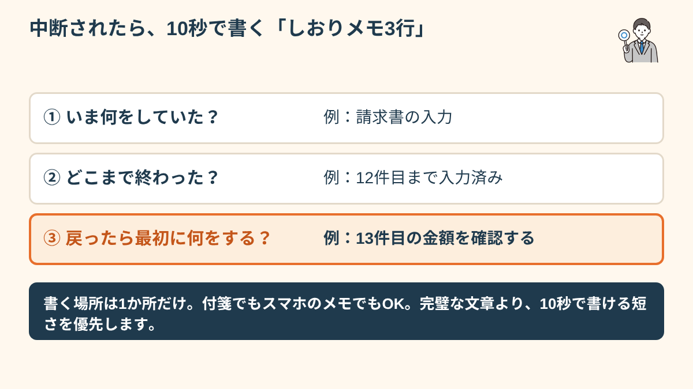
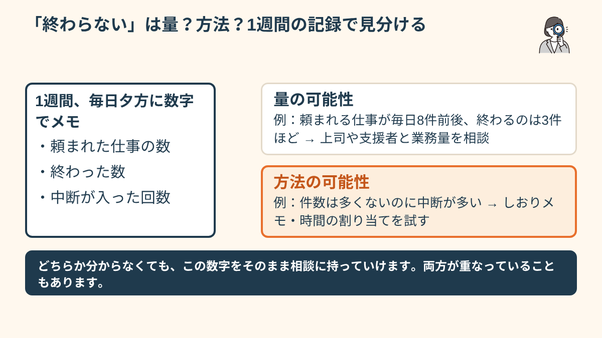
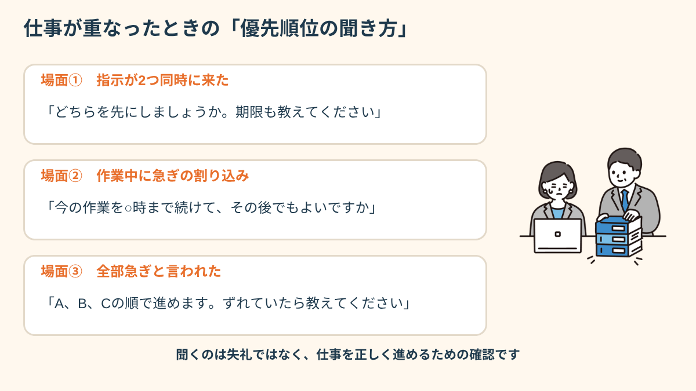
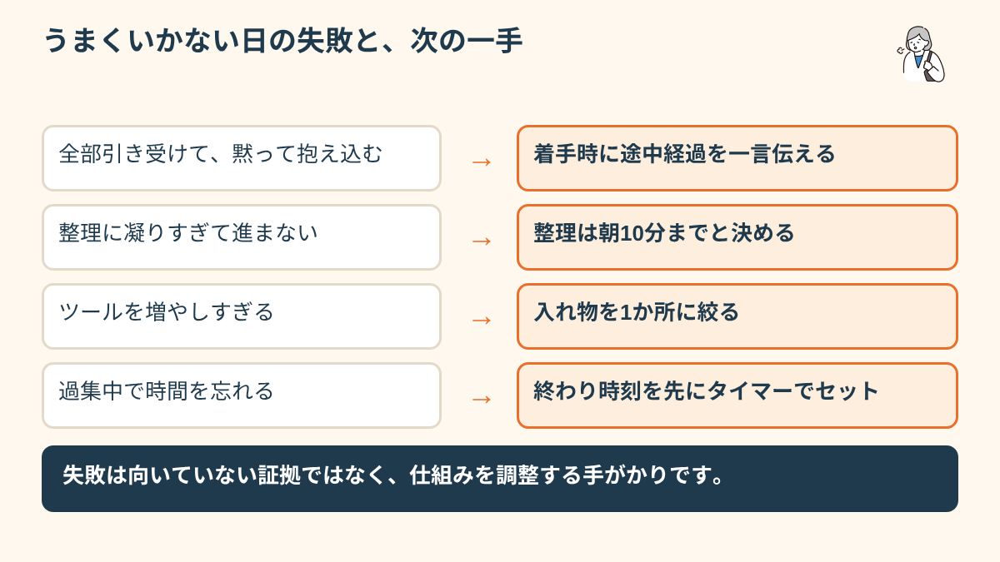

ADHDがマルチタスクで消耗する理由
ADHDのある方がマルチタスクで特につらくなる背景として、タスクの切り替えコストが高いという特性があります。一つのことに集中する「過集中」が起きやすい一方で、意図的に注意を切り替えることが難しく、複数の仕事を同時進行させることで認知的な負荷が一気に増えます。「あれもこれも」という状態になると、どれにも集中できなくなり、全体的な作業効率が落ちます。
たとえば午前中に、請求書の入力、電話の取り次ぎ、上司から頼まれた資料の修正の3つが重なったとします。入力に取りかかって10分後に電話が鳴り、受話器を置いたときには「どこまで入力したか」が分からない。そこへ資料修正の催促が来て、気づけばどれも中途半端なまま昼になっている。こうした日が続くと、「自分は仕事ができない」と感じてしまいがちです。
ただ、これは能力の問題というより、切り替えのたびに「さっきまでの状況を思い出す」作業が発生し、そのつど時間とエネルギーを使っているという構造の問題として考えられることがあります。元の作業に戻るまでに数分かかると言われることもあり（個人差が大きく、一律の数字ではありません）、1日に10回中断が入れば、それだけで数十分が「戻るための時間」に消えている計算になります。
また、優先順位をつけることそのものが難しい場合もあります。「どれが重要か分からない」「全部急いでいるように見える」という状態になると、最終的に「どれも手をつけられない」という選択肢が出てしまうことがあります。
しかも、頭の中で「あれもやらなきゃ」を抱え続けること自体が負荷になります。作業中も別の仕事のことが頭の片隅にあり、目の前の作業に使える余力が減る。帰宅してもぐったりして、翌朝また同じ状態で出勤する。この悪循環に気づけるだけでも、「怠けているわけではない」と自分を責める気持ちを少し緩められるかもしれません。

「今、何をやるか」を一つに絞る技術
ADHDの方がマルチタスクをうまく回すための第一歩は、「今やることを一つに絞る」という設計です。複数のタスクがある場合、以下のステップが有効なことがあります。
- タスクを全て書き出す：頭の中に留めず、紙かメモアプリに全部出す（「脳内在庫ゼロ化」）
- 今日終わらせる1〜2つを選ぶ：全部やろうとしない。「今日のコレ」を決める
- タスクに時間を割り当てる：「この仕事を10:00〜11:00にやる」と場所と時間を決める
- 中断が入ったら記録して戻る：「○○さんに呼ばれて中断。次にやる作業：△△の続き」とすぐメモ
ポイントは、仕組みを「頑張らなくても回る形」にしておくことです。たとえば朝、始業から最初の10分だけを使って、付箋かメモアプリに今日の依頼を全部書き出します。次に、その中から「午前に終わらせる1つ」と「午後に終わらせる1つ」だけに丸をつけ、残りは「明日以降」の箱に移します。丸をつけた2つ以外は、いったん見ないと決めてしまうのがコツです。
もう一つ役に立つのが、割り込みが入ったときの「しおりメモ」です。中断された瞬間に、次の3行だけを書きます。「いま何をしていたか」「どこまで終わったか」「戻ったら最初にやること」。10秒で書ける短さにしておくと、戻ってきたときに思い出す作業が大きく減ります。完璧なタスク管理表を作るより、この3行が続くほうが現場では効くことが多いようです。

職場でマルチタスクを求められたときの対処
職場でマルチタスクが避けられない場面では、上司や同僚に「一つずつ確認しながら進めたい」と伝えることが有効なことがあります。「優先順位を教えてもらえますか」「どれが最も急ぎですか」と聞くことは、仕事の質を上げるための正当な確認です。「そんなことも分からないのか」と思う職場なら、それ自体が問題かもしれません。
オープン就労の場合は、「マルチタスクより順番に一つずつ処理する方が質が上がる」という特性を開示し、業務設計を相談することも一つの選択肢です。
伝え方に迷うときは、確認の形にするとやわらかくなります。「いま○○を進めているのですが、△△を先にしたほうがよいですか」「今日中のものと、明日でよいものを分けて教えていただけますか」。拒否ではなく、仕事を正確に進めるための確認として聞くのがポイントです。具体的な言い方は次の章で場面別に紹介します。
特性を職場に伝えるかどうか（開示）は、あくまで本人が決めることです。伝える場合も、「診断名」より「こうしてもらうと力を出しやすい」という具体的な配慮のお願いのほうが、相手に伝わりやすいことがあります。社内で話しにくい場合は、通っている支援機関や就労支援の担当者に、間に入ってもらえるか相談するという方法もあります。利用できる制度は時期や地域で変わるため、最新の情報は各窓口で確認してください。
「以前の職場は常に複数のことを同時にやらされて、毎日頭がパンクしてた。今の職場は上司が『何が今一番大事？』を毎朝教えてくれる。それだけで全然違う。マルチタスクじゃなくて、順番が分かれば動ける。」
「仕事が終わらない」の整理、量の問題か方法の問題か
「どれだけ頑張っても仕事が終わらない」という場合、純粋に業務量が多すぎる場合と、業務量は適正だが方法が合っていない場合があります。支援者や職場の信頼できる人と「今の業務量は適正か」「方法を変えることで解決できるか」を整理することが出発点です。「自分の能力が低い」と一人で結論づける前に、環境・方法の問題として見直せる部分がないか確認することをお勧めします。
「量か方法か」を見分けるには、1週間だけ記録をつけるのがおすすめです。毎日夕方に、次の3つを数字でメモします。「今日頼まれた仕事の数」「終わった数」「中断が入った回数」。たとえば、頼まれた仕事が毎日8件前後で、終わるのが3件ほどなら、業務量そのものが多い可能性があります。反対に、頼まれるのは4件なのに中断が15回ある、という場合は、仕事の量よりも「割り込みの多さ」や「進め方」に手を入れる余地があります。

この記録は、上司や支援者に相談するときの材料にもなります。「大変です」だけではなく「1週間で頼まれた仕事が平均8件、終わったのが3件、中断が12回でした」と伝えられると、相手も具体的に対応を考えやすくなります。数字にすることで、感覚だけで自分を責める状態から一歩離れられるはずです。
- ADHDはマルチタスクで認知負荷が高くなりやすい、特性を理解する
- 「今やることを一つに絞る」シングルタスク設計が基本
- 優先順位の確認は正当な仕事の進め方、遠慮しなくていい
- 「終わらない」は量の問題か方法の問題かを分けて考える
複数の仕事を頼まれた場面別・優先順位の聞き方
「優先順位を聞くといっても、実際に何と言えばいいのか分からない」という声はよく聞きます。ここでは、よくある3つの場面で使いやすい言い方の例を挙げます。そのまま使っても、自分の言葉に直して使っても構いません。

場面1：作業中に、別の仕事を頼まれたとき
「いま○○を進めていて、14時までに終わる見込みです。△△はそのあとでもよろしいでしょうか。もし△△が先なら、○○は一度止めます」。ここで大切なのは、今やっていることと、終わる見込みの時刻をセットで伝えることです。相手は、自分の依頼がどれくらい待てるのかを判断しやすくなり、「いま急ぎかどうか」をその場で答えてくれることが多くなります。
場面2：朝の時点で、複数の依頼が重なっているとき
始業直後に、3件の依頼を並べて確認する方法があります。「今日お願いされているのは、AとBとCの3件で合っていますか。いちばん先に終わらせたいのはどれでしょうか」。選んでもらった1件に集中し、残りは「何時ごろ着手します」と一言添えておきます。朝の1分で、そのあと数時間の迷いを減らせることがあります。
場面3：別々の人から、別々の急ぎを言われたとき
いちばん困るのがこの場面です。自分で順番を決めようとすると、どちらかの機嫌を損ねるのではと不安になります。このときは、順番を決める役目を、自分ではなく上司に返すのが安全です。「Aさんから○○を、Bさんから△△を、どちらも本日中にと頼まれています。どちらを先にすればよいか、ご判断をいただけますか」。自分の責任で板挟みを抱え込まずに済み、ミスへの不安が強い方にも使いやすい方法です（関連：ミスが怖くて動けない。ADHDの方の職場での不安との向き合い方）。
やりがちな失敗と、立て直しの次の一手
シングルタスクを意識していても、うまくいかない日はあります。よくある失敗と、その次の一手を整理しておきます。失敗は「向いていない」の証拠ではなく、仕組みを調整するための手がかりです。
- 全部引き受けて、黙って抱え込む：期限が近づいてから「間に合いません」と言うのは、言う側も言われる側もつらくなります。次の一手は、着手した時点で「ここまで進みました、残りは○時間かかりそうです」と途中経過を一言伝えること。早めの共有は、評価を下げるどころか信頼につながりやすい行動です。
- 整理に凝りすぎて、本体の仕事が進まない：タスク表の色分けやテンプレート作りに1時間かけてしまうことがあります。次の一手は、整理の時間に上限（たとえば朝10分）を決めること。上限を過ぎたら、粗いままでも作業を始めます。
- ツールを増やしすぎる：アプリ、付箋、手帳、カレンダーと管理先が増えると、「どこに書いたか」を探す手間が新しい負担になります。次の一手は、入れ物を1か所に絞ること。迷うなら、まず紙の付箋1枚から始めて構いません。
- 過集中で、時間も次の予定も忘れる：集中できること自体は強みですが、気づいたら会議の時間を過ぎていた、ということも起こります。次の一手は、スマートフォンやタイマーで「集中の終わり時刻」を先にセットしておくこと。鳴ったら、キリが悪くても一度立ち上がります。

どうしても自分の工夫だけでは回らないと感じたときは、一人で抱えず、支援機関に相談する選択肢もあります。就労移行支援や障害者就業・生活支援センターなどでは、仕事の進め方の整理や、職場への伝え方の相談に乗ってもらえる場合があります。利用条件は制度や地域によって異なるため、詳しくはお住まいの地域の窓口で確認してください。伝え方そのものに不安がある方は、発達障害とビジネスマナー、「分からない」を「できる」に変えるコツも参考になります。
最後に、1日の流れの一例を置いておきます。9:00 今日の依頼を書き出す（10分）→ 9:10 午前の1つに丸をつける → 9:15〜11:30 その1つだけに集中（割り込みはしおりメモ）→ 11:30 途中経過を上司に一言報告 → 午後も同様に1つ。これは完成形ではなく、あくまで出発点です。自分に合わない部分は、1週間試して直していってください。